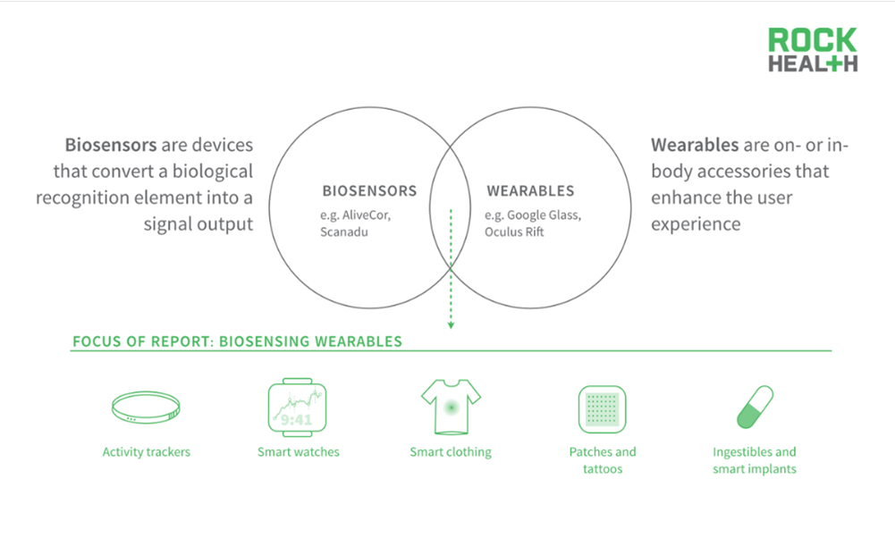

A biosensor is an electronic device that can track and relay physiological information constantly and non-invasively, such as a smartwatch that tracks heart rate. Targeted biomarkers may be tracked using advanced instruments, resulting in a greater clinical understanding of diseases. It also provides a response to the need for monitoring individuals over weeks or months.
Wearable biosensors normally depend on wireless sensors and are inserted within bandages, patches or items that can be worn. These biosensors have a high sensitivity level which means that with the constant development in properties such as long-term stability, selectivity, and response time, the capacity to detect analytes at the molecular level increases the adoption rate which results in better, safer and easier to use devices..
These wearable biosensors are important as they significantly impacted the medical industry in many ways such as: Early detections of any serious health issues, clearer and better communications between a patient and a doctor. Wearers do not need to connect to a machine on a regular basis to obtain information, for continuous control, the data is delivered wirelessly.This kind of technology requires less action by the patients which will increase the accuracy of the information. Wearable biosensors have the potential to reduce the pressure on healthcare system by enabling self-monitoring in order to regulate one's health and avoid sickness. Wearable, interconnected biosensors allow for remote monitoring, allowing patients to avoid hospitalization or early discharge. Wearable biosensors can alleviate the stress on healthcare industry and free up hospital space for more responsive treatment by enabling telemedicine.
 Team:1013